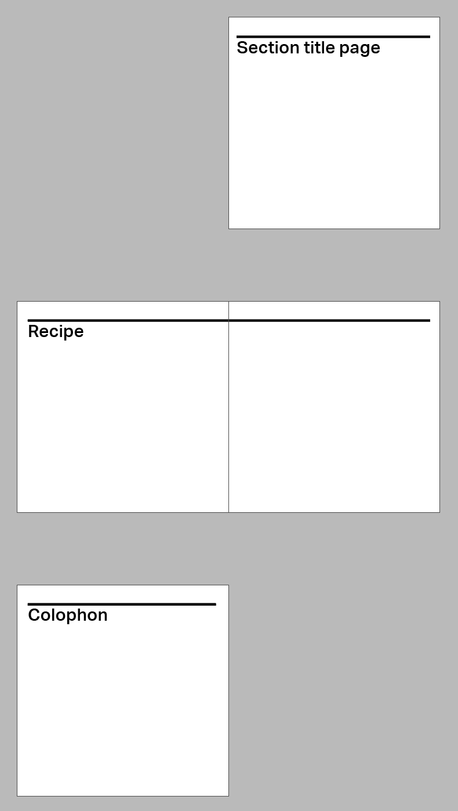
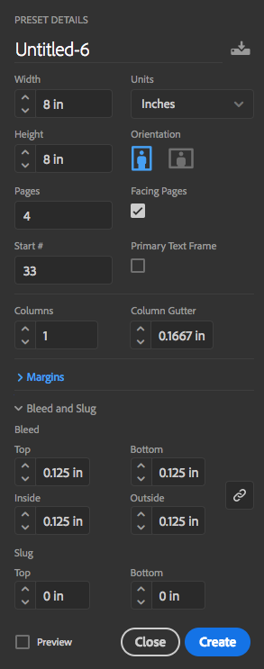

The GRC 322 recipe book to be produced as an in‑class, and out‑of‑class assignment
Find a recipe for a dessert, cookies, pie, or something scrumptious, and create a series of four pages for our Goodies recipe book.
You want, of course, to include beautiful images to go with your recipe. You may use original illustration or photography, but they need to be original images created by you.
You’re assigned with an odd page, a spread, and an even page:
Haley Adler: pages 7 to 10
Shayna Aigner: pages 11 to 14
Creekstar Allan: pages 15 to 18
Erika Arteaga: pages 19 to 22
Ashley Chen: pages 23 to 26
Rebekah Fesmire: pages 27 to 30
Hannah Hamilton: pages 31 to 34
Madeline Hitzeman: pages 35 to 38
Rachel Lackmann: pages 39 to 42
Celina Laguisma: pages 43 to 46
Dominique Lau: pages 47 to 50
Lily Morgans: pages 51 to 54
Alena Mueller: pages 55 to 58
Steven Nguyen: pages 59 to 62
Emma Norland: pages 63 to 66
Melissa Paul: pages 67 to 70
Caitlin Royston‑Murphy: pages 71 to 74
Michael Sassano: pages 75 to 78
Sam Shin: pages 79 to 82
Henry Tregenza: pages 83 to 86
Patricia Wassermann: pages 87 to 90
Ali White: pages 91 to 94
Ally Wingert: pages 95 to 98
Include on the last page a colophon which lists the typefaces that you have used, and a little about their designer.

Each of your pages is 8×8″. Make sure to include a 0.125″ area. Be mindful of the area for spiral punching. Furthermore, include page numbers on the outside bottom corner. (When you create your document, you can choose what’s its first page.)

You may use any typefaces you want, as is the case with all assignments for this course, but the fonts must have an identifiable source. Choose your typefaces and fonts carefully because recipes use fractions, and these are particularly difficult to set in type.
Please cite the source of your recipe somewhere on the document.
Please follow these instructions carefully. Every step is critically important to the success of our book.
Run the spell‑check in InDesign.
Click with the text tool anywhere in the document, and hit ⌘I. The spell‑check will come up. Choose Document (it defaults to Story). Check the whole thing, fixing any misspelled word en route.
Make sure to use high‑resolution
Check for broken links, etc.
Check your bleeds...
to be sure that you have the artwork extending off the page (if you intend to bleed).
High Quality Print
File > Adobe PDF Presets > [High Quality Print]
Save your file
Name it use the convention Lastname‑book.pdf
Please use hyphens to separate the words in your file name. (No underscore.)
Lastname‑book.pdf.